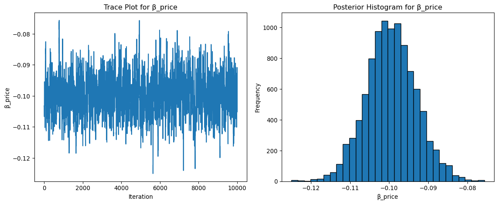

This assignment expores two methods for estimating the MNL model: (1) via Maximum Likelihood, and (2) via a Bayesian approach using a Metropolis-Hastings MCMC algorithm.
1. Likelihood for the Multi-nomial Logit (MNL) Model
Suppose we have \(i=1,\ldots,n\) consumers who each select exactly one product \(j\) from a set of \(J\) products. The outcome variable is the identity of the product chosen \(y_i \in \{1, \ldots, J\}\) or equivalently a vector of \(J-1\) zeros and \(1\) one, where the \(1\) indicates the selected product. For example, if the third product was chosen out of 3 products, then either \(y=3\) or \(y=(0,0,1)\) depending on how we want to represent it. Suppose also that we have a vector of data on each product \(x_j\) (eg, brand, price, etc.).
We model the consumer’s decision as the selection of the product that provides the most utility, and we’ll specify the utility function as a linear function of the product characteristics:
\[ U_{ij} = x_j'\beta + \epsilon_{ij} \]
where \(\epsilon_{ij}\) is an i.i.d. extreme value error term.
The choice of the i.i.d. extreme value error term leads to a closed-form expression for the probability that consumer \(i\) chooses product \(j\):
A clever way to write the individual likelihood function for consumer \(i\) is the product of the \(J\) probabilities, each raised to the power of an indicator variable (\(\delta_{ij}\)) that indicates the chosen product:
We will simulate data from a conjoint experiment about video content streaming services. We elect to simulate 100 respondents, each completing 10 choice tasks, where they choose from three alternatives per task. For simplicity, there is not a “no choice” option; each simulated respondent must select one of the 3 alternatives.
Each alternative is a hypothetical streaming offer consistent of three attributes: (1) brand is either Netflix, Amazon Prime, or Hulu; (2) ads can either be part of the experience, or it can be ad-free, and (3) price per month ranges from $4 to $32 in increments of $4.
The part-worths (ie, preference weights or beta parameters) for the attribute levels will be 1.0 for Netflix, 0.5 for Amazon Prime (with 0 for Hulu as the reference brand); -0.8 for included adverstisements (0 for ad-free); and -0.1*price so that utility to consumer \(i\) for hypothethical streaming service \(j\) is
where the variables are binary indicators and \(\varepsilon\) is Type 1 Extreme Value (ie, Gumble) distributed.
The following code provides the simulation of the conjoint data.
Note
3. Preparing the Data for Estimation
The “hard part” of the MNL likelihood function is organizing the data, as we need to keep track of 3 dimensions (consumer \(i\), covariate \(k\), and product \(j\)) instead of the typical 2 dimensions for cross-sectional regression models (consumer \(i\) and covariate \(k\)). The fact that each task for each respondent has the same number of alternatives (3) helps. In addition, we need to convert the categorical variables for brand and ads into binary variables.
data = pd.read_csv('conjoint_data.csv')data.head()data = pd.get_dummies(data,columns=['brand','ad'],drop_first=True)data.head()
Here I’ll split the data into X and Y which represent my explantory and response variables. Then creating groups to identify choice task.
Then we’ll initalze the Beta’s for our log_likelhood function and run the optimize to find what the optimal values for beta are given the data and return our MLE means and std errors.
import numpy as npX = data[['brand_N', 'brand_P', 'ad_Yes', 'price']].valuesy =data['choice'].values# Step 1: Get unique task identifiers (e.g., (resp, task) pairs)groups = data[['resp', 'task']].drop_duplicates().reset_index(drop=True)# Step 2: Build a zero matrix: rows = alternatives, columns = tasksn_rows = data.shape[0]n_tasks = groups.shape[0]group_indicator = np.zeros((n_rows, n_tasks))# Step 3: Fill in 1s where each row belongs to a specific taskfor task_index, (resp_id, task_id) in groups.iterrows(): mask = (data['resp'] == resp_id) & (data['task'] == task_id) group_indicator[mask.values, task_index] =1beta_init = np.zeros(X.shape[1]) # often start with all 0sfrom scipy.optimize import minimizeresult = minimize( fun=log_likelihood, x0=beta_init, args=(X, y, group_indicator), method='BFGS')beta_mle = result.x # MLE estimateshessian_inv = result.hess_inv # estimated inverse Hessianstandard_errors = np.sqrt(np.diag(hessian_inv)) # approximate SEs
I’ll create confidence intervals using the standard errors we calcualted in the last cell and multyplying by 1.96, which is the z-score associated with a 95% CI interval in the standard normal distrbution and then return the results.
I’ll rewrite the likelhood function modfied to use the logs and include the given log priors for each of the beta and begin the MCMC chain. The chain will cycle through 11,000 iterations with the first 1,000 thrown out because the algorithim needs to be ‘dialed-in.’ The Beta will be intialzed at the given values of mean zero and std devationd .05,.05,.05, and .005.
Then I’ll starty looping through the chain calcualting the proposed posterior distrbution and the existing posterrior distrbution. We’ll find the accept ratio as the ratio between the proposed and existing and then if it meets criteria we’ll accept or reject the distrbtuion. If the accept ratio is greater than 1 we’ll accept the the proposed distrbution. If its less than one we’ll accept the proposed distrubtion with a probability equal to accept probability.
Once we’ve cycled through the loop 11,000 times we’ll have enough information about the form of the posterior distrbution. From this postrerior distrubtion we are able to directly calcualte the mean of the sample posterior distrbution and the std dev of the sample posterior distrbution.
The MLE method and Metrolopisis Hasting methods produce very simialar coeffcietns and std errors which gives us high confidence that our process worked.

6. Discussion
If the data were not simulated, the parameter estimates would be interpreted directly based on their signs, magnitudes, and significance. For example, a positive coefficient for the brand_N variable would suggest that respondents prefer Netflix over the baseline brand . If the coefficient for Netflix is greater than the coefficient for Amazon Prime, it indicates that, on average, respondents derive more utility from choosing Netflix than Prime, all else being equal.
A negative coefficient for price makes intuitive sense — it reflects that as the price of an option increases, the likelihood of it being chosen decreases. This is consistent with standard economic theory and suggests that the model is capturing realistic price sensitivity.
In a basic model, we assume that all respondents share the same set of preferences (i.e., the same coefficients). In a hierarchical model, we instead allow each respondent to have their own set of coefficients. These individual-level coefficients are drawn from a population-level distribution with a mean and variance that we estimate.
To simulate such data, you would:
Draw individual preference vectors (coefficients) for each respondent from a normal distribution centered around a population mean Use those individual-level preferences to generate choices for each task. To estimate this type of model, you would:
Estimate both the population-level parameters (mean and variance of preferences) and the individual-level parameters (one set of coefficients per respondent). Use methods like Hierarchical Bayes (HB) or mixed logit models that rely on simulation or MCMC to estimate the distribution of preferences. This approach provides richer insights into how preferences vary across individuals and is commonly used in real-world conjoint studies to enable better targeting and segmentation.